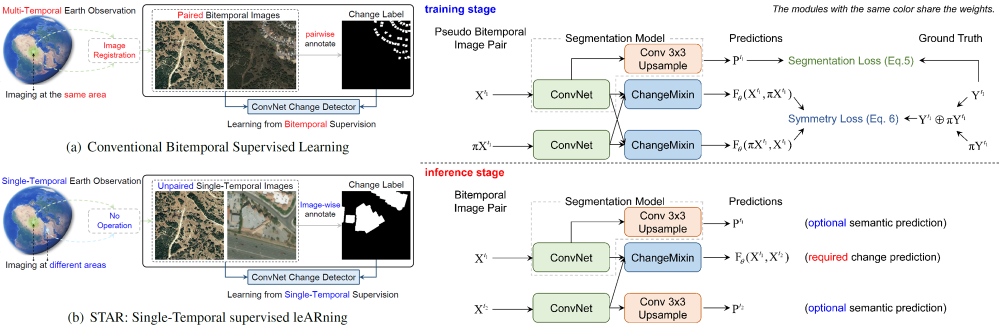
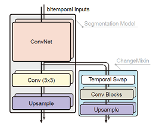
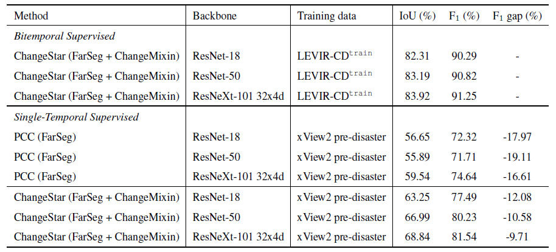

Change is Everywhere:
Single-Temporal Supervised Object Change Detection
in Remote Sensing Imagery
ICCV 2021
- Zhuo Zheng
- Ailong Ma
- Liangpei Zhang
- Yanfei Zhong


Abstract
For high spatial resolution (HSR) remote sensing images, bitemporal supervised learning always dominates change detection using many pairwise labeled bitemporal images. However, it is very expensive and time-consuming to pairwise label large-scale bitemporal HSR remote sensing images. In this paper, we propose single-temporal supervised learning (STAR) for change detection from a new perspective of exploiting object changes in unpaired images as supervisory signals. STAR enables us to train a high-accuracy change detector only using unpaired labeled images and generalize to real-world bitemporal images. To evaluate the effectiveness of STAR, we design a simple yet effective change detector called ChangeStar, which can reuse any deep semantic segmentation architecture by the ChangeMixin module. The comprehensive experimental results show that ChangeStar outperforms the baseline with a large margin under single-temporal supervision and achieves superior performance under bitemporal supervision.
Change is Everywhere
We observed that the importance of pairwise labeled bitemporal images lies in that the change detector needs paired semantic information to define positive and negative samples for object change detection. These positive and negative samples are usually determined by whether the pixels at two different times have different semantics in the same geographical area. The semantics of bitemporal pixels control the label assignment, while the positional consistency condition (The bitemporal pixels should be at the same geographical position.) is only used to guarantee independent and identically distributed (i.i.d.) training and inference. It is conceivable that change is everywhere, especially between unpaired images, if we relax the positional consistency condition to define positive and negative samples.
Single-Temporal supervised leARning (STAR)
The key idea of single-temporal supervised learning (STAR) is to learn a generalizable object change
detector from arbitrary image pairs with only semantic labels via Eq. 2.
\begin{equation}
\mathop{{\rm min}}\limits_{\theta} \, \mathcal{L}(\mathbf{F}_\theta(\mathbf{X}^i, \mathbf{X}^j), {\rm
compare}(\mathbf{Y}^i, \mathbf{Y}^j))
\end{equation}
To provide change supervisory signals with single-temporal data, pseudo bitemporal image pairs are first
constructed.
Leveraging pseudo bitemporal image pairs, bitemporal data in the original learning problem
(Eq. 1) can be replaced with single-temporal data, thus the learning problem can be
reformulated as:
\begin{equation}
\mathop{{\rm min}}\limits_{\theta} \, \mathcal{L}(\mathbf{F}_{\theta}(\mathbf{X}^{t_1},
\pi\mathbf{X}^{t_1}), \mathbf{Y}^{t_1} \oplus \pi\mathbf{Y}^{t_1})
\end{equation}
where pseudo bitemporal image pairs \(\mathbf{X}^{t_1}, \pi\mathbf{X}^{t_1} \) with their change label
\(\mathbf{Y}^{t_1} \oplus \pi\mathbf{Y}^{t_1} \) provide single-temporal supervision.
The superscript \(t_1 \) is only used to represent that the data is single-temporal.
Please check the paper for detailed description of STAR.
ChangeStar = Any Segmentation Model + ChangeMixin

ChangeStar is a simple yet unified network composed of a deep semantic segmentation model and the
ChangeMixin module.
This design is inspired by reusing the modern semantic segmentation architecture because semantic
segmentation and object change detection are both dense prediction tasks.
To this end, we design the ChangeMixin module to enable any off-the-shelf deep semantic segmentation
model to detect object change.
Please check the paper for detailed description of ChangeStar.
Bitemporal Supervision vs. Single-Temporal Supervision
Single-temporal supervision belongs to weak supervision for object change detection.
To investigate the gap between bitemporal supervision and single-temporal supervision, we conducted
comprehensive experiments to analyze their performance difference.
The results are presented in Table 5.
We observe that there is 16\(\sim \)19% F\(_1 \) gap between PCC and bitemporal supervised methods.
Our STAR can significantly bridge the gap to within 10% when using a large backbone.
And it can be seen that the performance gap keeps getting smaller as the backbone network goes deeper.
Table 5: Bitemporal supervision versus single-temporal supervision. All methods were evaluated on LEVIR-CD\(^{\texttt{test}} \).
Please check the paper for more analysis.
BibTeX
@inproceedings{zheng2021change,
title={Change is Everywhere: Single-Temporal Supervised Object Change Detection in Remote Sensing Imagery},
author={Zheng, Zhuo and Ma, Ailong and Liangpei Zhang and Zhong, Yanfei},
booktitle={Proceedings of the IEEE international conference on computer vision},
year={2021}
}
@inproceedings{zheng2020foreground,
title={Foreground-Aware Relation Network for Geospatial Object Segmentation in High Spatial Resolution Remote Sensing Imagery},
author={Zheng, Zhuo and Zhong, Yanfei and Wang, Junjue and Ma, Ailong},
booktitle={Proceedings of the IEEE/CVF Conference on Computer Vision and Pattern Recognition},
pages={4096--4105},
year={2020}
}
Acknowledgments
This work was supported in part by the National Key Research and Development Program of China under grant no. 2017YFB0504202, in part by the National Natural Science Foundation of China under grant nos. 41771385 and 41801267, and in part by the China Postdoctoral Science Foundation under grant no. 2017M622522.The website template was borrowed from Bowen Cheng and Michaël Gharbi.